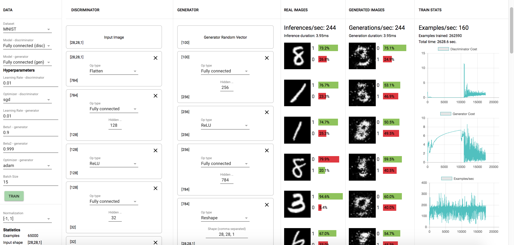
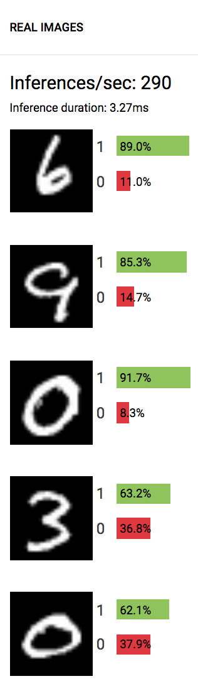
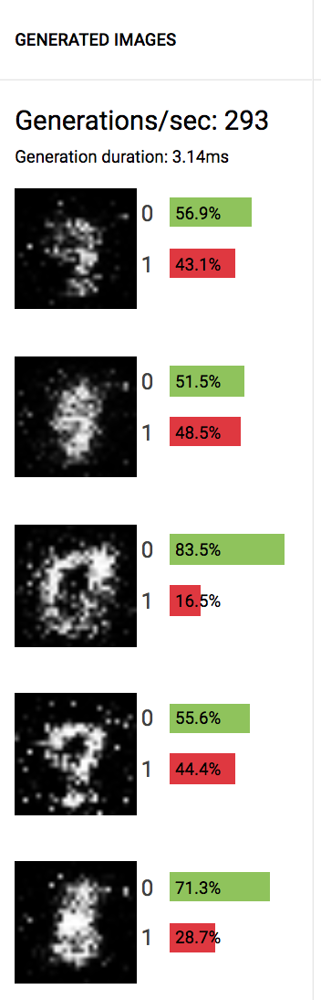
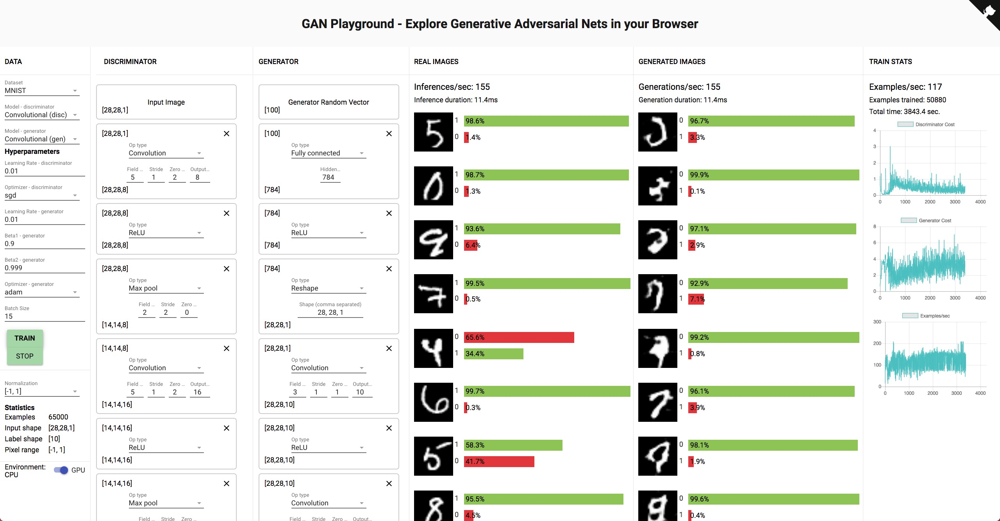
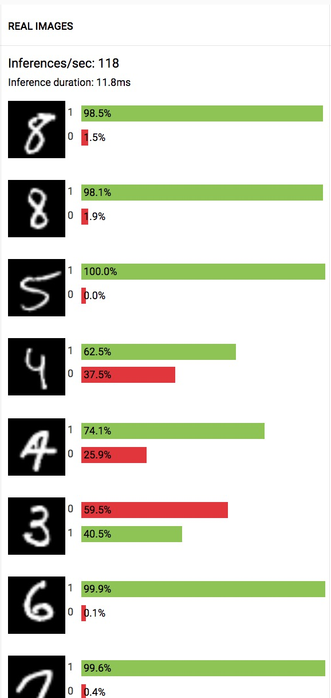
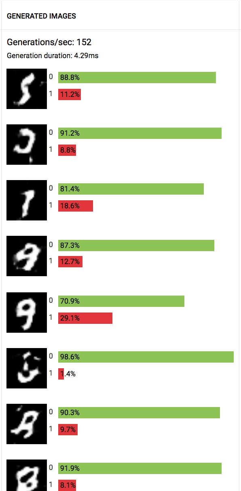
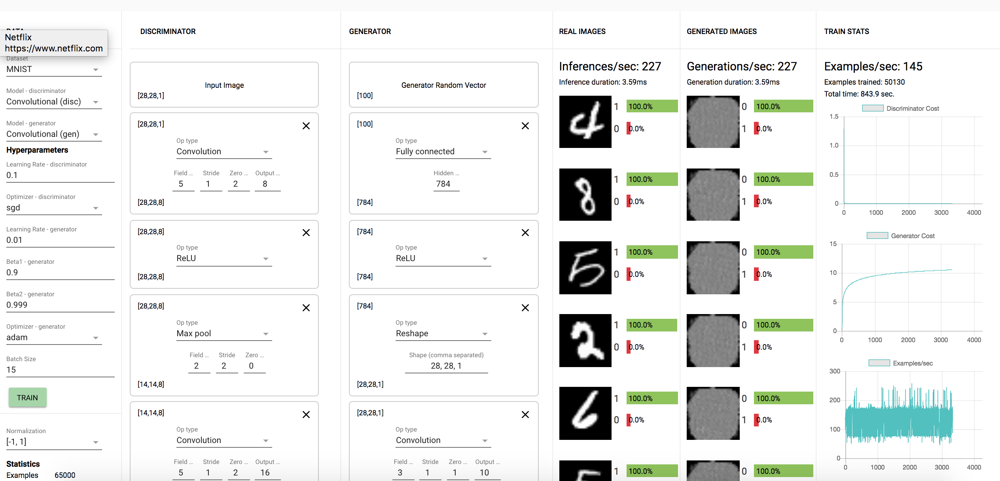
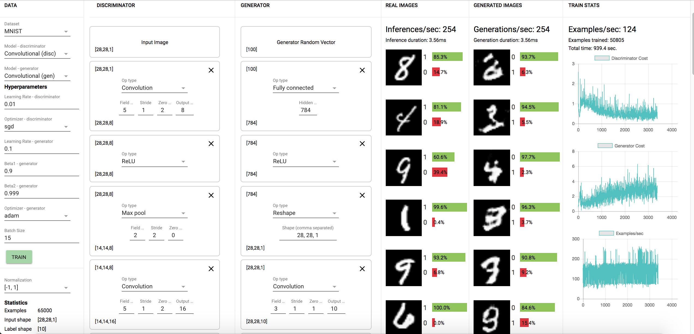
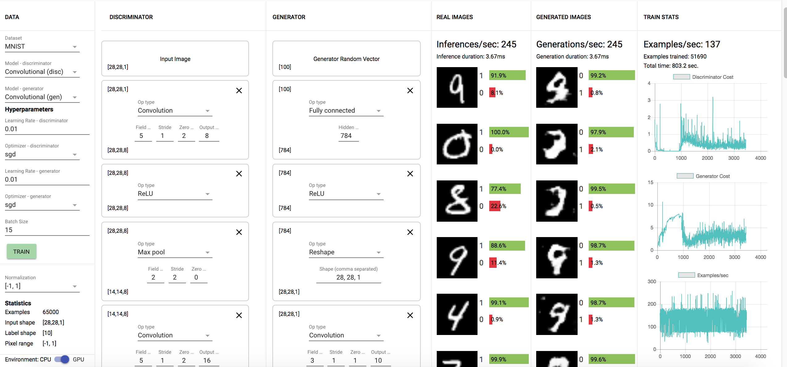
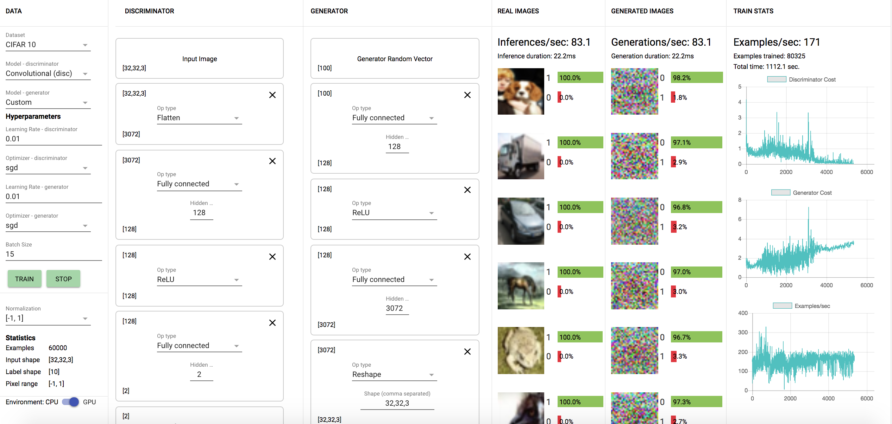

6.S198 Assignment 5
Name: Binh Le
E-mail: binhle@mit.edu
Other Assignments:
Section 1.2: Changing the Model
1.2.1 Why does the Generator need the second FC layer to transform the shape [256] output of the first FC layer?
Hint: Can a Reshape layer reshape [600] to [20,20,2]? How about [800] to [20,10,4]?
-
The second FC layer is needed to transform the shape [256] output of the first FC to [784] because then the
reshape layer is able to take that and transform it into a [28, 28, 1] output because the inputs and
outputs are equal.
-
A reshape layer would not be able to take [600] to [20, 20, 2] because there are 800 outputs compared to
600 inputs.
-
A reshape layer would be able to take [800] to [20, 10, 4] because there are both 800 inputs and outputs.
1.2.2 Submit screenshots of some results (generated examples, discriminator predictions on real and fake data,
and learning curves as in the plots above).
-
Fully connected model



-
Convolutional model



1.2.3 Can you say anything about the performance of the system's default fully connected model versus the
performance of the convolutional model?
-
The convolutional model is able to create better generated examples compared to the fully connected model
given less iterations of training. The fully connected model still has very spotty generated images after
200,000 iterations but the convolution model is starting to produce generated images that look like strokes
after only 50,000 iterations.
Section 1.3: Exploring with the GAN Playground
Submit screenshots of your results with at least 3 different configurations (architecture, learning rate,
optimizers). At a minimum, try: the provided architecture with generator learning rate greater than
discriminator learning rate, same architecture with discriminator learning rate greater than generator learning
rate, and one other variant. Feel free to experiment with other layer types as well. No need for all your
results to look great. Keep in mind that you'll probably need to run each of your experiments for several
minutes or longer, so don't feel the need to got overboard trying lots of variations.
-
Discrimator learning rate (0.1) greater than generator learning rate (0.01):

-
Discrimator learning rate (0.01) less than generator learning rate (0.1):

-
SGD as the optimizer function for generator instead of adam:

1.3.1. Were any of your models able to generate any reasonable MNIST digits? If so, were any of your models
able to generate all of the MNIST digits (0-9)? Did any of your models get stuck at some point generating one
or a few digits only (i.e. mode-collapse)?
-
The model with a greater discriminator learning rate was unable to produce reasonable MNIST digits and I
also found that adam optimizer works better for the generator in generating reasonable MNIST digits
compared to SGD with the same number of iterations.
-
The model with a greater generator learning rate of 0.1 was able to generate the most real-looking MNIST
digits. It looks like that model was able to generate decent looking 3's, 7's, and 1's. It did better with
digits that are drawn with clear individual strokes but had more trouble with digits such as 8's and 5's
with lines that are closer together, the digits generated often had strokes that seemed to blend together.
1.3.2 What happened when the discriminator learning rate was greater than the generator learning rate? What
about when the generator learning rate was greater than the discriminator learning rate?
-
When the discriminator learning rate was greater than the generator learning rate, the training prioritized
improving discriminator accuracy by getting all real images labeled 1 and generated images labeled 0. This
produced generated images that were far from reasonable MNIST images in order to correctly label them all
as 0.
-
When generator learning rate was greater than the discriminator learning rate, the training prioritized
generating images that could be more likely labeled as 1. This produced decent MNIST digits at the expense
of the accuracy of the discriminator on real images which were more often labeled as 0 in this model.
1.3.3 Try building configurations for CIFAR. (This will require a minute or two to load first, try running with
only FC layers for ~15 minutes and document your results.
-
Discrimator: Input -> Flatten -> FC 128 -> ReLu -> FC 2 -> Softmax -> Label
-
Generator: Random Vector -> FC 128 -> ReLu -> FC 3072 -> Reshape -> Tanh -> Output
-
After about 80,000 iterations, the model was unable to produce decent CIFAR images. The generated images
were mostly blotches of color, this is most likely due to the complexity of CIFAR outputs. There are [32,
32, 3] or 3072 outputs compared to [28, 28, 1] outputs for the MNIST digits. The addition of color adds a
lot more complexity to the images and makes it harder to train with few iterations.
